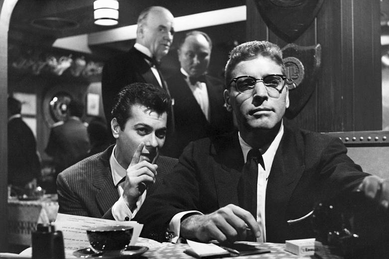

"The Big Sleep" - 1946 - Directed by Howard Hawks
Starring Humphrey Bogart as Philip Marlowe, the most iconic private detective in noir, investigating a blackmail racket targeting a frail elderly man and his two reckless daughters (one of which, Vivian Regan, played by Lauren Bacall) who're entangled with the most dangerous and powerful men of the city's underworld. Based on Raymond Chandler's 1939 novel. Famous for it's impossible to follow, convaluted plot, is the definitive film noir.
"Double Indemnity" - 1944 - Directed by Billy Wilder
Fred Macmurray bleeds from a gunshot wound as he recounts Barbara Stanwyck's attempt to claim a big payout on her husband's 'accidental' death. Has almost every element considered classic noir including two doomed characters falling helplessly into each other's arms, moments after meeting, to disasterous consequences.
"Sunset Boulevard" - 1950 - Directed by Billy Wilder
One of the greatest films ever. Although not always considered 'classic noir', is more bleak and more cynical than almost any other. Starring Gloria Swanson as a reclusive and depraved silent movie actor in the age of talking pictures and William Holden as a struggling screenwriter who tries to revive her career. "You're Norma Desmond. You used to be in silent pictures. You used to be big." - "I am big. It's the pictures that got small."
"The Maltese Falcon" - 1941 - Directed by John Huston
Starring Humphrey Bogart as private detective Sam Spade, with Mary Astor, Peter Lorre and Sydney Greenstreet. One of the most famous examples in cinema of a Macguffin as three untrustworthy characters desperately chase a suposedly priceless object for the purpose of advancing the story and developing the suspense. "The stuff dreams are made of."
"Sweet Smell of Success" - 1957 - Directed by Alexander Mackendrick
One of the 'coolest' films ever with one of the greatest screenplays. Burt Lancaster is a ruthless newspaper columnist and Tony Curtis plays a shameless and frustrated press agent. "The next time you want information, don't scratch for it like a dog, ask for it like a man!"
"In a Lonely Place" - 1950 - Directed by Nicholas Ray
Humphrey Bogart plays a wild-tempered screenwriter suspected of murder, with Gloria Grahame playing a neighbour who falls in love with him. One of the moodiest and most suspenseful films from the time. Many noirs have one or two intriguing elements, but this is entertaining throughout.
"Kiss Me Deadly" - 1955 - Directed by Robert Aldrich
An evolution in noir as the plot tackles nuclear threat rather than post-war cynicism. One of the most influential films of the genre, including inspiring the mysterious glowing box in "Pulp Fiction". Starring Ralph Meeker, Albert Dekker and Cloris Leachman in her film debut.
"The Big Heat" - 1953 - Directed by Fritz Lang
One of the most entertaining and violent noirs. Most notable for Lee Marvin throwing a pot of hot coffee in Gloria Grahame's face. Glenn Ford stars as a cop investigating a suspicious suicide of another officer that leads to him taking on a ruthless crime syndicate. A much better film than Ford's more celebrated noir 'Gilda' with Rita Hayworth.
"Laura" 1944 - Directed by Otto Preminger
Regarded as one of the greatest mysteries in film, and with the plot being so convulted and the style so strange, the details revealed are all quickly forgotten. The most memorable elements are the stylised aesthetic, Gene Tierney as Laura and Clifton Webb as Waldo Lydecker, a newspaper columnist, with such lines as "I don't use a pen. I write with a goose quill dipped in venom."
"Touch of Evil" - 1958 - Directed by Orson Welles
Charlton Heston, Janet Leigh and Marlene Dietrich star with Orson Welles in his directing return to Hollywood after over a decade in European exile. Considered one of his and classic noir's last great films. Despite Charlton Heston being bizzarly cast as a Mexican Government official named Miguel Vargas who investigates a car bombing across the Mexican-American border. Most notable for the three-minute opening scene, considered one of the greatest long take's in cinema.